contents | previous | next WHAT had passed the preceding evening between Mrs. Vyvian and Rosalie was no sooner repeated to Montalbert, than it served as an additional argument to enforce the consent he had been so long soliciting. Montalbert was of a warm and impetuous temper: though he had never yet been emancipated from the government of an high-spirited and imperious mother, he was not the less bent on pleasing himself, than are those who have never been contradicted. It seemed, indeed, as if the severe restraint he had so long habitually been under, disposed him to be more earnest in a circumstance on which the whole happiness of his life depended; and when Rosalie asked him how he could hope ever to
) View image of 174 View image of 174 reconclie his mother to a marriage to which he himself owned she would have unconquerable objections, he inquired, in his turn, what amends she could make him for opposing the only connection which could make him happy, only from prejudice and difference of opinion in matters wherein he could not think as she did, and wherein he thought it unreasonable that her prepossessions should interfere with his choice. "I will certaily not make my mother uneasy, (said he); I will so far pay a compliment to her unfortunate prejudices, as to conceal from her what would make her so: but to relinquish the only woman I could ever love, is surely a greater sacrifice than she ought to demand of me. If, indeed, I were about to disgrace her, Rosalie, by uniting myself with a woman without reputation, or of a very mean and unworthy origin, I should feel that I ought not to be forgiven; but why, because our modes of worshipping God are different—why, because my mother was born in
) View image of 175 View image of 175 Italy, and you in England, should an imaginary barrier be raised, which must shut me out from happiness for ever? What has reason and common sense to do with all this?"—Rosalie was compelled to acknowledge that it had very little: still, however, the idea of a clandestine marriage shocked her; she solicited most earnestly that her mother might be made acquainted with it. This he strenuously opposed; representing, that if Mrs. Lessington knew it, it would not be a secret from Mrs. Vyvian, "Who, however, she may love you, (said he), would make it a point of conscience to prevent my marrying a Protestant, and ruining myself, as she would conclude I should, in the affections of my mother for ever. You know, Rosalie, how much I love my aunt. There is a pensive resignation to a very unhappy fate, a sort of acquiescence, which arises not from want of sensibility, but from the patience and self-government she has learned, that render her to me infinitely interesting, while her kindness and affection
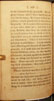 View image of 176to me demand all my gratitude. But with great virtues, and I know hardly any one who has for so many, she is not without prejudices, which greatly add to her own unhappiness. It is unnecessary to point out to you what these are; nor need I tell you, Rosalie, that they are exactly such as would induce her to think it her indespensible duty to inform my mother of our attachment. Then all the evils, I apprehend, would follow. I must either hazard offending her beyond all hope of forgiveness, or I must lose you for ever."—Let no fastidious critic, on the characters of a novel, declaim against the heroine of this, as being too forward or too imprudent. There are only two ways of drawing such characters: they must either be represented as—— "Such faultless monsters as the world ne'er saw"—— Or with the faults and imperfections which occur in real life. Of these, many are such as would, were they described as existing in a character for which the reader
) View image of 177 View image of 177 is to be interested, entirely destroy that interest. There are other errors, which, in an imaginary heroine, we may at once blame and pity, without finding the interst we take in her story weakened. This is the sentiment that Rosalie may excite; who being tenderly attached to a man, not only amiable in his person, but of the most insinuating manners, believing his declarations of love, and persuaded that her friends could not disapprove of the step he so earnestly urged her to take; fearing, on the other hand, to lose him; that he would be convinced he was indifferent to her, would return to Italy, and make an effort to forget her; found her objections giving way before so many motives, and at length, though with trembling reluctance, agreed to the expedient Montalbert proposed—of their being married by the priest whom he had engaged for that purpose. Rosalie neither knew the danger this man incurred, nor that her marriage would not be binding. She knew, however, enough, from such information as she had casually
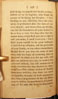 View image of 178 picked up, to express her doubts to Montalbert as to its legality, who found the means of satisfying her scruples. "It is binding to me, (said he), since the ceremony is performed after the laws of our own church; and where then, my Rosalie, can be the foundation of your doubts?—In a few, a very few days after that fortunate hour, which shall give me a right to call you mine, I must leave you; but I shall know myself to be your husband; I shall feel no disquiet, lest the persuasion of your family, or any other circumstance, should throw you into the arms of another, and the hope of returning soon to England to claim you for my wife, will give me patience not only to endure this enforced absence, but will animate me to those exertions that may shorten its duration."——The calmer reason of Rosalie sometimes told her, that there was much sophistry in many of these arguments; but what young woman her age listens to reason, in opposition to the pleadings of the man she loves?—Montalbert
) View image of 179 View image of 179was equally passionate and perservering: he had some plausible manner of obviating every apprehension, and it now only remained to be considered, how the marriage ceremony might pass with most secrecy. Though Montalbert had not seemed to make more frequent visits than usual at the house of Mrs. Vyvian, nor to appear oftener at Hampstead, he had in reality hardly ever quitted it since Mrs. Vyvian had settled there; but had taken an obscure lodging in the lower part of the village, where he was sure he should not be known, and this gave him an opportunity of remaining later either with his aunt, when Rosalie happened to be there, or at the house of Mrs. Lessington, who was now more frequently than ever in London. Then it was that Rosalie passed the evenings entirely with Mrs. Vyvian, and nothing was so natural as that Montalbert, when he happened to be there, should attend her home, to which Mrs. Vyvian
) View image of 180 View image of 180never seemed to make any objections on Rosalie's account, though she often expressed her apprehensions of the danger he incurred in returning so late to London. It was strange, that suspecting as Mrs. Vyvian seemed to do, some attachment which made Rosalie unhappy, she had no notion that her nephew might be the object of this attachment; but it seemed never once to have occurred to her, and Montalbert conducted himself so cautiously before her, when Rosalie was of the party, that she had no reason to believe he regarded her otherwise than as a common acquaintance. Montalbert, young as he was, had been a great traveller: he had lived at Paris, at Vienna, at Turin, at Rome, and at Florence, and had acquired in the more early part of his life the reputation of being a young man of dissipation and intrigue. These gaieties had been exaggerated, and Mrs. Vyvian had received an impression of his libertinism,
) View image of 181 View image of 181which had never been effaced. She now, therefore, could not imagine, that for such a man the simplicity fo Rosalie's beauty could have any attractions; and persuaded, as she was, that he was engaged in intrigues among many women of a very different description, she sometimes gently reproved and sometimes slightly rallied him, on these fashionable excesses. He humoured her in the answers he gave; listened as if half disposed to feel contrition, or defended himself, as if conscious of the truth of these charges—management which would have concealed his real sentiments and designs from a more penetrating observer than Mrs. Vyvian. During the few days that Montalbert was in doubt how to procure unsuspected the admission of the priest to Rosalie, while he was with her, the family of his aunt arrived from their house in the north to settle for the winter in Park Lane. Mr. Vyvian contented himself with calling one morning on horseback, with a slight and cold inquiry. He told his wife, that he had
) View image of 182 View image of 182directed his steward to attend her whenever she pleased on money matters, and that his daughters should visit her the next day: he then mentioned the marriage of the eldest, of which the preliminaries were now settled; he did not, however, tell Mrs. Vyvian of this, because he thought her approbation of any consequence, but spoke of it as a matter settled, signifying, at the same time, that it was his pleasure she should speak to her daughter of the arrangement, as being what every part of her family would not but approve. Mrs. Vyvian acquiesced, without any remonstrance on the cruelty of thus disposing of her child at so early an age, without even consulting her mother. A few tears involuntarliy fell from her eyes as soon as her unfeeling husband was gone; but she immediately went to her oratory, and found consolation in the duties of religion; to which, under all these trying circumstances, she had ever recoursed. But the appearance of the two Miss Vyvians had another effect on Montal
) View image of 183 View image of 183bert. These ladies, young as they were, had been early initiated into the world. They were no longer diffident and unassuming, but had all the confidence of women of middle age, without their judgement; were careless of the opinion of all the world as to any thing but their beauty and air of high ton, and rather inclined to provoke censure, by their singularity, than to conciliate by civility, or engage by gentleness. They had already learned that disdain of all inferiors which belongs to people of the very first world; and the alliance the eldest was about to form, which would eventually place her in the first rank of nobility, seemed to have elevated the haughty spirits of both: an alteration which, on their very first visit, their mother saw with additional disquiet; while Montalbert, who was with Mrs. Vyvian when they came, beheld and heard them with disgust, that amounted almost to aversion. During the stay Montalbert made her father's seat in the north, Miss Vyvian had
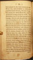 View image of 184 been piqued at the little attention he had shown her, and mortified to observe his neglect of those charms, which she thought, and which her maid assured her, ought to attract the homage of all the world. That Montalbert was so far from paying her this homage, that he took the privilege of his near relationship to tell her of her faults, was not to be forgiven by Miss Vyvian. She had by no means forgotten, now that she met him in London, the slights she had received in Yorkshire, and attacked him with severe sort of raillery, which he failed not to return, though with more good humour than the lady deserved. Thus passed the first visit; but, on the second, (as the young ladies affected still to retain so much consideration for their mother as to make their airings very frequently towards Hampstead), it happened, unluckily enough, that Mrs. Vyvian, not aware of their coming, had sent for Rosalie to sit with her. Montalbert soon after came in; and as Mrs. Vyvian was pleased to encourage her taste in drawing, Montalbert, who
) View image of 185 View image of 185without any affectation understood it extremely well, was giving her some rules, and, leaning over her chair, was lost in pleasure of instructing his charming pupil; but he sometimes varied a little from what he undertook to teach, and, instead of giving her a sketch of the object he was describing, he wrote a line or two in Italian. Mrs. Vyvian was pensively at work, and did not regard them. The room where they sat was at a distance from the door to which the coaches drove up, and while this was going on, a footman entered, announcing the two Miss Vyvians. Montalbert in confusion quitted the table near which he was standing, and Rosalie, whose cheeks were dyed with blushes, was putting away her drawings; but Mrs. Vyvian, speaking mildly, bade her not disturb herself; then, welcoming her daughters, she said, "My dears, here is your playfellow and acquiantance, the youngest Miss Lessington, your old friend Rosalie."
) View image of 186 View image of 186Miss Vyvian, towards whom her younger sister seemed to look, as if to regulate her own behaviour, turned haughtily to Rosalie, and making her a formal and cold curtsey, muttered something in so low a voice, that it could not be heard; then, without taking any further notice, began to tell her mother where she had been, and who she had seen. Miss Barbara, the youngest, took not the least notice of Rosalie, but, as if she had never seen her before, sat profoundly silent. Montalbert, who remarked with indigination this insolent behaviour, and who saw a faint blush of grief and regret wavering on the pale cheek of Mrs. Vyvian, was tempted to express some part of what he felt, but he checked himself, and had determined to go, when Miss Vyvian, casting a malicious look at the drawing-table, and then at Rosalie, who sat by it unoccupied, said, "Oh! I see now, Mr. Montalbert, from whence it happens, that your friends in town complain that they never see you——
) View image of 187 View image of 187you have found employment here in teaching some of the fine arts." "If I were capable of teaching them, (replied Montalbert, who could not so command his countenance, but that it expressed his resentment), if I were capable, Miss Vyvian, of instructing, I should think myself highly honoured were that young lady to become my scholar; but, I assure you, she is already so great a proficient, that it would not be in my power to improve the elegance of her execution." "Oh! I dare say, (replied Miss Vyvian); and now I recollect, Miss Lessington, I think you used to be fond of drawing, and had some lessons when you lived with us. But, Mr. Montalbert, since this lady has no occasion for your instructions, do tell me what it is you do with yourself? Do you know, that out of the few people I have seen, at least a dozen have asked me, what is become of my gay and gallant cousin? Some have affected, (added she, with a very significant look), that you are
) View image of 188 View image of 188married, and others, that you are become melancholy mad for the love of some rural beauty; but all agree that you are a lost creature." Mrs. Vyvian, however, hurt at such a wild and improper speech, had not time to express, as much as she dared do, her sense of its indecorum, before she was struck with the pale countenance of Rosalie, who seemed ready to faint. Montalbert was about to reply, when Mrs. Vyvian, as if unable to check herself, rose from her seat, and taking Rosalie's hand, said, in a tremulous voice, "I am sorry, my dear Miss Lessington, that you are so shocked at the unkindnessand rudeness of Miss Vyvian; I will take care that you shall not again be subject to it. My woman shall wait on you home, and I beg you and your mother will accept my apology, thus hastily made, till I can renew it in person." Rosalie, who had never seen Mrs. Vyvian exert so much spirit before, but who was more terrified than ever, least the re-
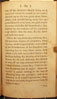 View image of 189tort of her daughter should bring on a quarrel of which she would be the cause; alarmed too at the hint given about Montalbert, and almost sinking under her apprehensions of every kind, was glad to quit the room, which she did immediately; but, disabled by the violence of her emotions to go farther than the next, she sat down and burst into tears. While she was, however, reasoning herself into some degree of composure, Mrs. Vyvian, whose languid spirits were roused by the ill-behaviour of her daughter, was reproving her in very bitter terms, such indeed as she had never used before; but far from feeling the severity of a remonstrance she so well deserved, she affected to turn off her impertinence with a laugh. "Dear Madam, (cried she), I had no notion of making you so angry. Upon my honour I meant nothing in the way of affronting your fair protogée; and as to behaving as if I had forgotten her, dear, you know one really forgets every body in a year or two."
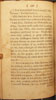 View image of 190"You have at least forgotten yourself, Miss Vyvian," said her mother. Miss Barbara now fancied it necessary for her to enter into a defence of her sister. "I am sure, Madam, my sister meant nothing; but one must really feel it grating to find that Miss, that country parson's daughter, preferred to us. People have often said, indeed, a great while ago, that the Lessington family had as much of your favour as your nearest relations. I am sure neither of us, neither my sister or me, had a thought of offending you—but it does seem hard to your own children, to see people, who are comparatively strangers, so much more taken notice of." "It is you and your sister Barbara, (said the unhappy mother, while sobs stifled her voice), who have estranged yourselves from me; it is you and your sister————-" She could not go on. Montalbert, shocked by the sight of her distress, approached her, and, tenderly taking her hand, said, "Dearest Madam, do not, I implore you,
) View image of 191 View image of 191distress yourself thus. These ladies are young and inconsequent; they may learn, and, I heartily hope, will, to know the value of such a mother." The agony of Mrs. Vyvian redoubled. "Nay, but I intreat you, (continued he), to be calm. Allow me to send your woman to you." "O no! (cried she with a deep sigh), do not leave me, Montalbert. I have in you all the consolation which is left me, now that my son is sent far from me." "Since you oblige me to speak plainer, Madam, (said Miss Vyvian, who seemed wholly unmoved at her mother's distress), since you compel me to say disagreeable things, I must tell you that it was quite time my brother was sent, as my Papa sent him; for he too was in danger of becoming too much attached to the same people that have weaned your affections from us. I should never have mentioned it, though, I assure you, if I had not seen that girl here, and been so found fault with for not worshipping her enough; for now my bro-
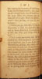 View image of 192ther is gone, it is a matter of indifference to me who her heart attracts; other people are old enough to take care of themselves—but come, sister, our company does not seem just now to give Mama any pleasure; another time, perhaps, we may be more fortunate." "Before you go, (said Mrs. Vyvian, endeavouring to stifle her convulsive sighs, and to speak distinctly), I conjure you to tell me what you mean about my son." "It is a very unwelcome task, Ma'am, (replied her eldest daughter), and I might not be believed; but if you ask the Abbé Hayward, he, perhaps, may obtain credit, even when he tells you so unwelcome a truth, as that your son, when you thought him engaged in quite another tour, was at Holmwood with one or two of his friends, (she cast a malicious look at Montalbert as she said this), and there was reason to apprehend that this Miss, or some of the Misses her sisters, were the occasion of his paying much more frequent visits
) View image of 193 View image of 193at the parsonage house, than even you yourself, perhaps, would have approved of, since, I can hardly think, your friendship would induce you to overlook the shocking disparity between the only son of Mr. Vyvian and such people as those." It seemed as if the unfortunate mother was uttery incapable of answering. She repeated in a faint voice, "The Abbé Hayward!—My son—My son at Holmwood!"—Her daughters, who appeared thus to have plunged a dagger in her heart, left her without any attempt to mitigate the pain they had inflicted, and she remained alone with Montalbert, who, during this conversation, had exhibited symptoms of anger and disquiet, which Mrs. Vyvian was too much affected to observe. It was some moments before she had recovered herself enough to command her voice. "Tell me, dear Montablert, (cried she at length), what does Miss Vyvian mean?—Tell me, when was my Charles at Holmwood?—When did he thus visit Mr. Lessington's famliy?"
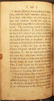 View image of 194"Never, Madam, I can venture to assure you, with the least improper design.....It is true, that when we were upon our tour this summer round the coast, the Count and I expressed a wish to see Holmwood. He, as having heard it spoken of as a fine old place; I, because I used to be fond of it when I was a boy, and passed there the most pleasant of my hours during my occasional visits to England. As Vyvian was fond of the scheme as we were, we went thither for four or five days. Charles fatigued himself too much, and was taken ill; but he recovered perfectly the next day: for some reason or other, he did not seem to wish you and his father should know he had visited Holmwood. This I only know by his enjoining the Count to secrecy, when, he being obliged to return to London, left us there." "You stayed there then some time?" "I cannot be correct, (answered Montalbert hesitating; our stay whether there or elsewhere, seemed to me to be a matter of no consequence at the time—nor could
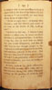 View image of 195I imagine why it was necesary to keep a man's visit to the seat of his father a secret. As near as I can recollect, we were there about seven or eight days." "Seven or eight days! (repeated Mrs. Vyvian); and did Charles pass much of his time at the house of Mr. Lessington?" "Indeed he did not. I believe I may venture to assure you, he never was there but when I accompanied him: I am sure, I may say, that he went with no design that you could disapprove, and that all Miss Vyvian has thought proper to say orginates in misrepresentation on one side, and malicious jealousy on the other. For Heaven's sake, dearest Madam, make yourself easy! I am persuaded, that, in regard at least to Charles, you have no reason to be otherwise." A little soothed by these assurances, Mrs. Vyvian became more clam, and at that moment seeing the Abbé Hayward coming up the garden, of which he had
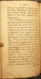 View image of 196a key to let himself in, from his morning walk, Montalbert rang for Nesbit, Mrs. Vyvian's woman, and leaving her mistress in her care, hastened away to speak to him. Their conference was long and serious. Mr. Hayward assured Montalbert, that he would quiet the spirits of Mrs. Vyvian relative to the supposed visits of her son at Barlton Brooks, and recommended it to Montalbert very earnestly to conceal as far as was now possible the disagreeable dialogue which had passed that morning. "You know Mr. Vyvian, (said he), and how violent and unfeeling he is....There is no knowing what rudeness and reproaches he may throw on that excellent lady, if this family dispute goes to any length.......I tremble for her peace."——The council this good man gave was perfectly reasonable. Montalbert felt that it was so; yet there was something in his manner, when he spoke of the Lessington family, which gave
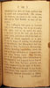 View image of 197Montalbert an idea of some mystery that he could not comprehend. He returned, however, no more to the house, but hastened to find Rosalie at that of her mother. Mrs. Lessington had gone to London early in the morning, was to go to a play that night, and to an opera the next, a spectacle which she had not seen for many years, and about which she had expressed as much eagerness as a girl. It was in hopes of making his advantage of this absence, that Montalbert had met Rosalie at Mrs. Vyvian's in the morning. Rosalie, dreading importunity which she had no longer resolution to contend with, had taken her shelter there. Mrs. Vyvian, not at all expecting either Montalbert or her daughters, had engaged her to stay all day; when Miss Vyvian's jealousy and malice awakened by the sight of Rosalie, whom she had never thought so very handsome before, had, together with some circumstances hitherto concealed or stifled,
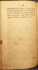 View image of 198 occasioned the scene of the morning: a scene which did more to accelerate the views of Montalbert, than he could have done in another week with all the eloquence of the most passionate love.
|
){kind=link}
){kind=link}
){kind=link}
){kind=link}
){kind=link}
){kind=link}
){kind=link}
){kind=link}
){kind=link}
){kind=link}
){kind=link}